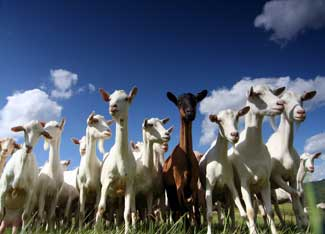

For centuries, humans have raised goats for milk, meat and fiber; as work animals; as pets; and for their skills as highly efficient weed-eaters. If you’re considering getting a goat (or a few), the first step is deciding what you want from your new animal, then finding the best breed suited to that task. Here’s a quick guide to which goats do what, along with a few breed characteristics:
Originating in Great Britain, Nubian goats are one of the most common breeds of dairy goat in the United States. A medium-large breed, they have short, glossy and fine coats of any color or pattern. Under ideal conditions, they can produce over 3,000 pounds of milk a year (4.8 percent butterfat) and are meatier than other dairy breeds. Nubians have long ears, ideally reaching half an inch past the muzzle.
The LaMancha goat originated in the United States and is a medium-large breed. With a short, glossy coat of any color or pattern and a production of 1,050 to 3,510 pounds of milk per year (3.9 percent butterfat), the most marked characteristic of this breed is its ears. You might see elf ears (up to 2 inches, with cartilage), gopher ears (up to 1 inch, no cartilage), or small or absent external ears.
Large, well-muscled Boers are classic meat goats. Their short coats may be red, black or spotted, though most are white with red or brown heads. Boers have long, pendulous ears, and Boer bucks have loose rolls of skin at the shoulders. The does often produce twins, though triplets and quadruplets aren’t unusual, and both sexes mature quickly. These South African natives can weigh in at 150 to 250 pounds for does, and 250 to 350 pounds for bucks.
Other meat goat breeds include Kiko, a New Zealand goat with large, broad horns; Savanna, a South African breed with a white coat and black skin, nose, horns and hooves; and Myotonic goats (also known as Fainters or Tennessee Fainting goats), famous for “fainting.” They’re a densely muscled breed and can be found with an array of coat colors and lengths.
While Angoras today are most common in Texas and South Africa, these woolly, relatively small goats originally hail from Turkey. Their hair - mohair - grows about 6 inches long, and a single goat may produce 6 1/2 to 7 1/2 inches a year. Purebred angoras have creamy white hair, and may produce 12 or more pounds of mohair per year.
You can read about more goat breeds in the breed database from the Oklahoma State University Department of Animal Science. Check out Mother’s Guide to Goats and How to Raise Healthy Goats to learn about buying and caring for goats.
Share your favorite photos of your goats at cu.MotherEarthNews.com.
|
 ISTOCKPHOTO These goats aren't just useful livestock, they also make highly entertaining - and sometimes mischievous - companions. |
|
|